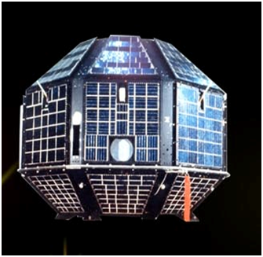

sattelite
<
News and Updates
-
< >< >< >
Aryabhata

The Aryabhata spacecraft, named after the famous Indian astronomer, was India's first satellite; .
| Mission | Scientific/ Experimental |
| Weight | 360 kg |
| Payload | X-ray Astronomy Aeronomy & Solar Physics |
| Launch date | April 19, 1975 |
| Launch site | Volgograd Launch Station (presently in Russia) |
| Launch vehicle | C-1 Intercosmos |
| Orbit | 563 x 619 km |
| Inclination | 50.7 deg |
| Mssion life | 6 months(nominal), Spacecraft mainframe active till March,1981 |
| Orbital Life | Nearly seventeen years (Re-entered on February 10,1992) |
Manufacturer: ISRO
Owner: ISRO
Application: Experimental
Type of Satellite: Experimental
Â